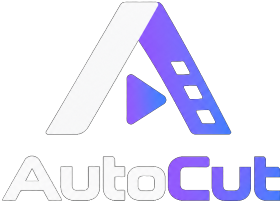

ИСТОЧНИК
папка не выбрана
—
Сменить
ТИП РОЛИКА
Влог
Интервью
Рилс
Клип
ДЛИТЕЛЬНОСТЬ
01:00
Убрать паузы
Убрать дубли
Лучшие моменты речи
Резать под бит музыки
Собрать рыбу
ЧЕРНОВИК · 0 КЛИПОВ
00:00:00:00
Вместо 3 ч отсмотра — готовая «рыба» на таймлайне
проверяю движок…
ЖУРНАЛ И СЛУЖЕБНОЕ
Что в проекте
Проверить движок
Обновить
Отменить задачу